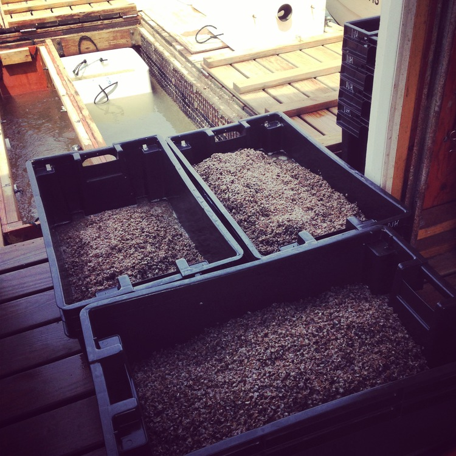
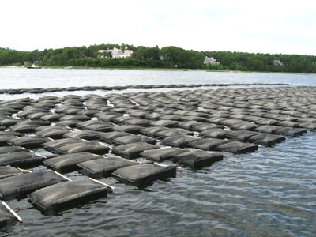
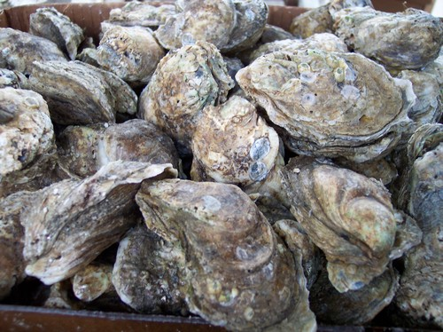
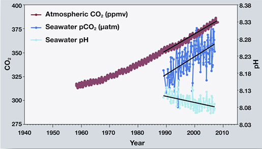

Oyster Farming
To start an oyster farm, you first need to start out with baby oysters, also known as spat, which are bought from nurseries located in Washington and Hawaii. In the nurseries, they ground up oyster shells into small shards so the oyster larvaes can attach to them.
They set these spats in groups of 300 and put it in a bag to let it grow. Once the spat grows 2 millimeters wide, they send it to the oyster farms. Once the farms receive the spat, they fill a different bag with the spat and let it float in the water.

These bags are attached in a line, and are set there for 6-8 months to grow. The oysters need to be set in cold water no more than 63 degrees fahrenheit, or less they will die and stop growing.
The oysters are harvested once they become 3 inches thick, and once harvested, they can be kept in good condition for 3 weeks.
As the oyster grows, there are many factors that affect their growth. A change in pH of the water kills the larvaes, before they can create a shell to protect themselves. The pH change is directly related to carbon dioxide levels in the air and the water.
Another thing oyster farmers have to deal with is runoff from other farms surrounding the oyster farm. The water from dairy farms carry sediments and fertilizers that contaminated the habitat of the oysters which kills planktons, the food source of the oyster, and thus killing the oysters as well.